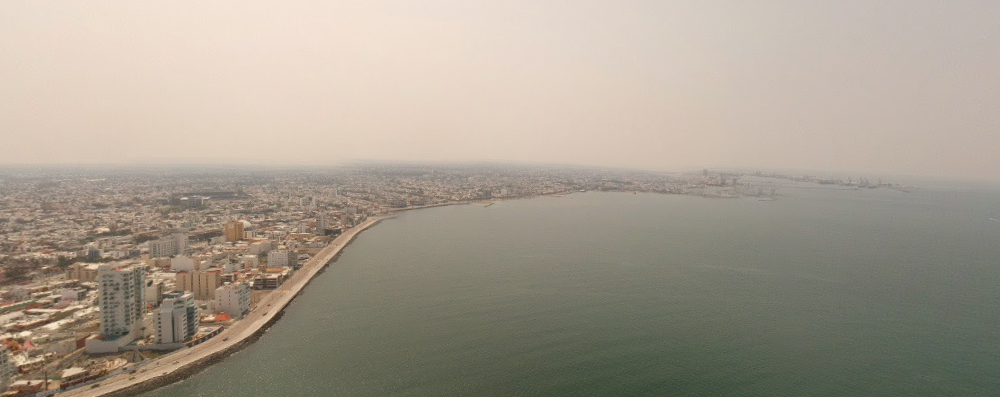
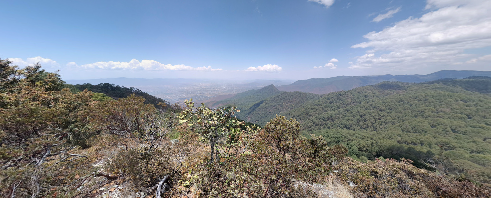

Nothing much, not yet at least. This is just ground zero for a
series of future projects set in the fictional country of Yohuala.
A place more real than one might initially think.
Remnants of Lake Atoccan:

This is one of the many lakes that make up the remnants of lake Atoccan. Located just 10 miles east of the country's capital.
The lake has been drained for the past few centuries since the Spanish conquest. Now all
that remains are a series of swamps, rivers, and small lakes dotted around the land.
Veratumba:

This is one of the most important ports in all of Yohuala. The majority of
the country's imports enter through this one little piece of land. Everything,
goods, services, ships, people, armies, nations, flags..... Everything comes here
Mountains of Mistipac:

This image looks over the largest valley in the state known as Mistipac
It's currently the dry season, so the dense fog that blankets the land is
less common now. This state is tied with Chiatepez for having the largest
indigenous population in the country. These include the Yacatecos and Apoctecos.